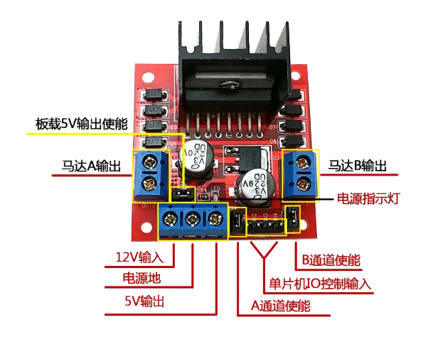
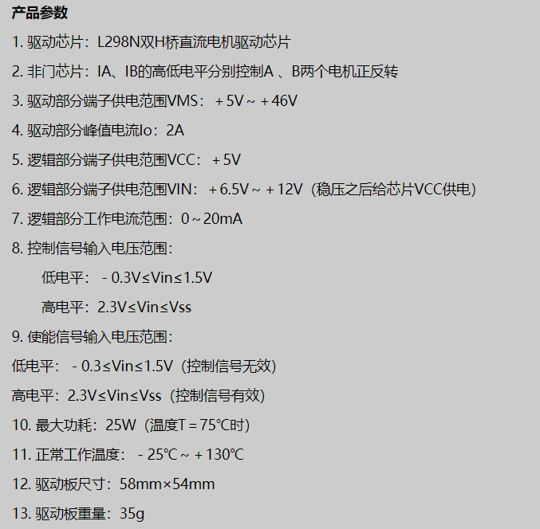
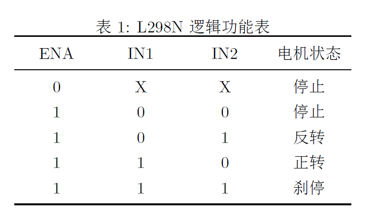
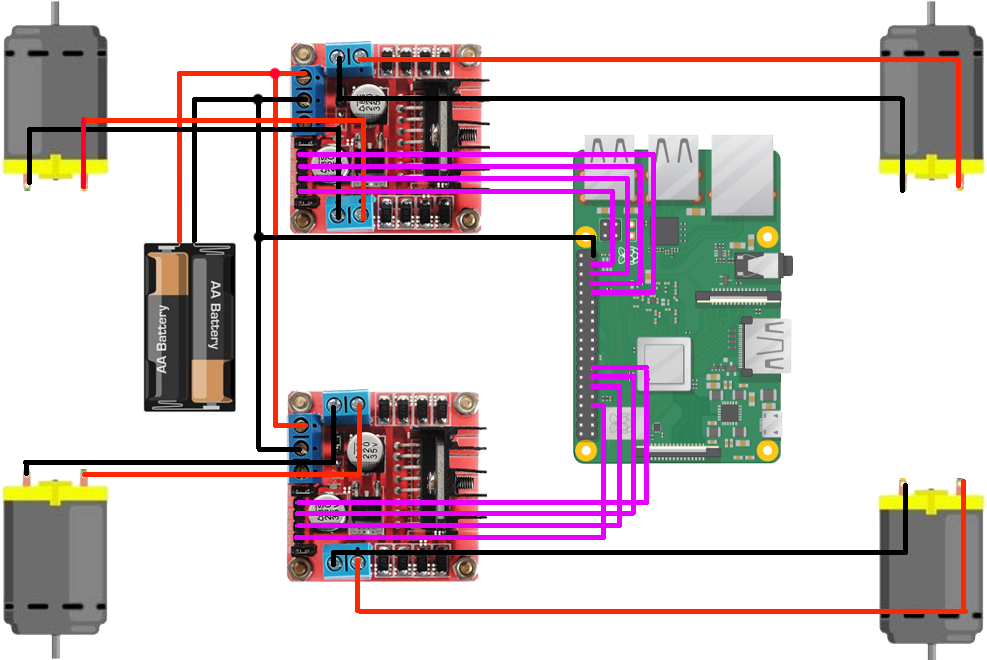
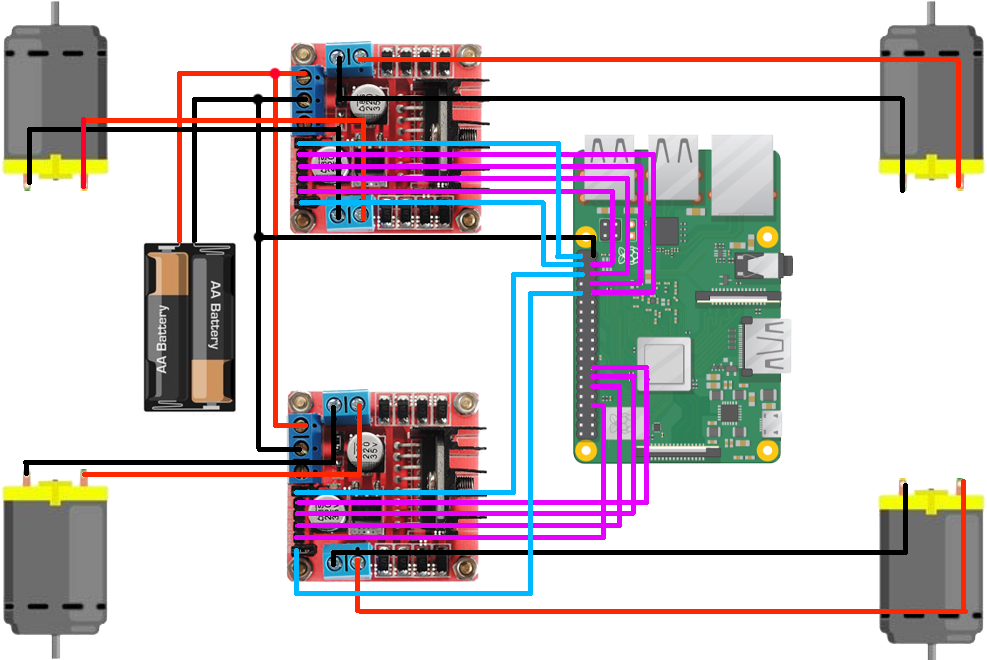

1. 简介
1.1 L298N
有关L298N基本信息的图表如下所示。
  以下列出几点注意事项：
- 如果要使用板载5V供电，输出使能的跳线帽要插上，但L298N模块用于驱动电机，供电可能不稳，不建议使用
- 使能端为高电平有效，默认为插上跳线帽，使之置于高电平，可通过这两个端口实现PWM调速(需取下跳线帽，并接至树莓派GPIO引脚)
- 电机输出接口无正负之分，如果发现电机转向有误将电机两线调换即可。
- 控制输入IN1-IN4：其中IN1、IN2控制电机M1，IN3、IN4控制电机M2。例如IN1输入高电平1，IN2输入低电平0，对应电机M1正转；IN1输入低电平0，IN2输入高电平1，对应电机M1反转。
1.2 树莓派引脚

1.2.1 编号方式
共有三种编号方式，指代的对象相同，只是编码方式不同：
- BOARD(功能物理引脚)：从左到右，从上到下。左边为奇数，右边为偶数。共计40个引脚。
- BCM：编号侧重于CPU寄存器，根据BCM2835的GPIO寄存器编号。
- wiringPi：编号侧重实现逻辑，把GPIO端口从0开始编号，这种编号方便编程。
1.2.1 引脚介绍
各引脚功能为：
- GPIO：通用输入输出接口，可通过软件配置成输入或输出。
- 3.3V/5.0V(VCC):提供3.3V/5.0V的固定电压
- 0V（GND）：接地
- SDA*：SDA是I2C数据传输口
- SCL：I2C时钟信号
- RXD：接收数据的引脚
- TXD：发送数据的引脚
- MOSI：为主输出从输入
- MISO：为主输入从输出
- SCLK: 系统时钟,指晶振频率
- CE*：片选（芯片有效）-表示低电平有效
其中：
- 标注了数字的引脚都能够用作GPIO
- 标注了其他名称的引脚也有一些其他特殊用途
- SDA和SCL引脚构成I2C接口
- MOSI,MISO,SCKL用于SPI接口
- GPIO所有输入输出都使用3.3V
- GPIO引脚可以被用作数字输入或数字输出，这两种操作电压都是3.3V
- 树莓派与Arduino 不同，其没有任何模拟输入，要进行模拟输入必须使用额外的模数转换器（ADC），或为其外接接口板，又或接到Arduino 或aLaMode 板上
1.2.3 注意事项
其中：
- 不要在GPIO的任何引脚上加高于3.3V的电压
- 每个输出不要引出超过3mA的电流。否则会缩短树莓派寿命
- 当树莓派在开机状态时，不要使用螺丝刀或其他金属物戳GPIO接口
- 不要使用高于5V的电压为树莓派供电
- 不要从3.3V的供电引脚引出总额超过50mA电流
- 不要从5V 的供电引脚引出总额出超过250mA的电流
2. 小车组装
物品：小车(网购的小车套件，也可以自己散装购买)、L298N(2个)、20cm面包线(母对母、公对公若干)、铜导线、电工胶布、USB升压降压电源模块(或者购买可充电电池)、充电宝、螺丝刀
本例中使用可充电电池给L298N供电，总电压为12V左右，此外还使用充电宝给树莓派供电(树莓派要与L298N共地，否则无法控制模块)。相关电路图如下所示(未画充电宝)。
不接使能端
接使能端(要拔出相应的跳线帽)
电路连接处用电工胶布包好，避免因短路问题烧坏模块。若使用USB升压模块，可用一个两输出的大充电宝代替本例中的两个电源，推荐使用这种方式，充电宝比可充电电池方便很多，且总体价格上也便宜一些。
先不接使能端，小车组装完成后请进行相关的测试，确保电机前后转动方向一致，相关代码如下所示。
#!/usr/bin/python
# -*- coding: utf-8 -*- # 声明编码方式，若不只用到ascii码时使用，可忽略
import RPi.GPIO as GPIO # 引入RPi.GPIO函数并命名为GPIO
import atexit
import time # 引入计时time函数
atexit.register(GPIO.cleanup) # 引脚清空
GPIO.setmode(GPIO.BOARD) # 将GPIO编程方式设置为BOARD模式
# 接口定义
'''
LEFT_FRONT_1 = 37
LEFT_FRONT_2 = 35
RIGHT_FRONT_1 = 7
RIGHT_FRONT_2 = 11
LEFT_BEHIND_1 = 31
LEFT_BEHIND_2 = 33
RIGHT_BEHIND_1 = 15
RIGHT_BEHIND_2 = 13
'''
allGPIO = [37, 35, 7, 11, 31, 33, 15, 13]
forwardOrback_A = [37, 7, 31, 15]
forwardOrback_B = [35, 11, 33, 13]
# 输出模式
GPIO.setup(allGPIO, GPIO.OUT)
# 启动运行
GPIO.output(forwardOrback_A, GPIO.HIGH)
GPIO.output(forwardOrback_B, GPIO.LOW)
time.sleep(5) # 持续5秒
# 置为低电平
GPIO.output(allGPIO, GPIO.LOW)
GPIO.cleanup() # 清空引脚3. GPIO说明
桌面版树莓派官方系统已经安装了Python2和3,可通过如下命令安装GPIO库
sudo apt-get install python-dev # 安装一个源外的python类库, 而这个类库内含需要编译的调用python api的c/c++文件，此时要安装python-dev
sudo apt-get install python-rpi.gpio以下是关于GPIO使用的简单说明，均使用python进行编写：
# 导入RPi.GPIO模块
import RPi.GPIO as GPIO
# 指定编号方式
'''
BOARD和树莓派电路板上的物理引脚编号相对应，使用这种编号的好处是，
你的硬件将是一直可以使用的，不用担心树莓派的版本问题。
BCM规则，是更底层的工作方式，它和Broadcom的片上系统中信道编号相
对应。在使用一个引脚时，你需要查找信道号和物理引脚编号之间的对应
规则。对于不同的树莓派版本，编写的脚本文件可能是无法通用的。
'''
GPIO.setmode(GPIO.BOARD)
# or
GPIO.setmode(GPIO.BCM)
# 禁用警告
'''
在Raspberry Pi的GPIO上可能有多个脚本/电路。如果RPi.GPIO检测到引
脚已被配置为默认（输入）以外的其他引脚，则在尝试配置脚本时会收到
警告。要禁用警告，可使用如下命令
'''
GPIO.setwarnings(False)
# 设置引脚为输入或输出
GPIO.setup(channel, GPIO.IN) # 输入
GPIO.setup(channel, GPIO.OUT) # 输出
# 引脚输出
GPIO.output(channel, state) # state为0 / 1 / GPIO.LOW / GPIO.HIGH / False / True
# 同时设置多个引脚
chan_list = [31, 33]
GPIO.output(chan_list, GPIO.LOW)
GPIO.output(chan_list, (GPIO.HIGH, GPIO.LOW)) # 第一个为高电平，第二个为低电平
# 使用PWM
'''
通过改变频率和占空比实现信号输出的调节。占空比，指高电平保持的时间，即与pwm周期时间之比。
'''
p = GPIO.PWM(channel, frequency) # 设置所需引脚，frequency是以Hz为单位的频率
p.start(dc) # 初始占空比，范围为：0 ~ 100
p.ChangeFrequency(frequency) # 设置新频率
p.ChangeDutyCycle(dc) # 更改占空比
p.stop() # 停止PWM
# 程序最后释放引脚，避免损坏
GPIO.cleanup()4. 参考说明
4.1 文档参考
本文档参考了以下内容：
- 有关L298N的相关说明，参考了：l298n、L298N模块的连接与使用（stm32驱动与51驱动）和L298N使用说明介绍
- 有关树莓派的引脚，参考了：树莓派引脚介绍与GPIO的初步认识与应用、树莓派GPIO 基础（一）和树莓派 40Pin 引脚对照表
- 有关小车的组装，参考了：零基础玩转树莓派（五）—控制直流电机
- 有关GPIO函数的使用参考了：树莓派---GPIO应用详解和树莓派学习笔记——GPIO功能学习
4.2 其他知识
有关更多详细的知识，可参考：
- 有关树莓派的更多学习，可参考：树莓派学习笔记——索引博文
- 有关python编码声明，可参考：Python编码声明# -*- coding: utf-8 -*-
- 有关树莓派python的升级，可参考：树莓派升级（安装）Python3.6(请谨慎升级，升级后可能原先安装的相关库也会一同被去除)
- 有关GPIO的其他配置，可参考：树莓派GPIO 基础（一）
- 有关GPIO函数的更多介绍和使用，可参考：3、树莓派 RPI.GPIO 使用手册或树莓派---GPIO应用详解
- 有关PWM的一些简单介绍，可参考：什么是pwm技术呢？
- 有关电机的更多控制，可参考：零基础玩转树莓派（五）—控制直流电机和（14）树莓派B+使用L298N驱动控制四驱车并实现一个简单的web控制端
如有不足之处，请指正